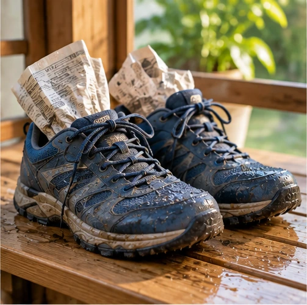

Взуття після дощу
Звичайна проблема — незвичайне рішення!
🎯 Ситуація

Кросівки мокрі. Їх потрібно висушити без гарячого обігрівача.
❓ Ваше завдання
Як прискорити висихання безпечними засобами?
🧩 Спробуйте!
Оберіть дві ідеї. Перетягніть їх у кошик або натисніть.
🧺 Ваші ідеї: Поки порожньо
🧪 Маленький дослід
Зробіть малюнок або просту безпечну модель. Порівняйте дві ідеї. Що працює краще?
✏️ Ваш винахід
Напишіть або намалюйте свою ідею!